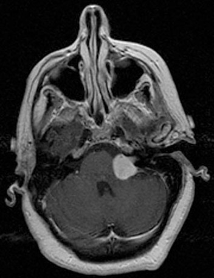

Ficha del catálogo
Schwannoma vestibular
- Sistema
- Cabeza y cuello
- Modalidad
- RM
- Región
- Conducto auditivo interno y ángulo pontocerebeloso
- Dificultad
- Avanzado
Es un tumor benigno originado en las células de Schwann de la porción vestibular del octavo par craneal. Constituye la lesión más frecuente del ángulo pontocerebeloso y se manifiesta con hipoacusia neurosensorial unilateral progresiva, acúfenos y en ocasiones inestabilidad. Cuando es bilateral obliga a considerar una neurofibromatosis de tipo 2.
Técnica
La resonancia con secuencias de alta resolución potenciadas en T2 del conducto auditivo interno es la técnica de cribado, ya que el tumor se ve como un defecto de relleno en el líquido cefalorraquídeo. El estudio con contraste y cortes finos confirma la lesión y valora su extensión. La tomografía solo aporta la valoración ósea del conducto y del laberinto.
Qué observar
- Lesión centrada en el conducto auditivo interno con extensión al ángulo pontocerebeloso
- Morfología en helado con cucurucho, con componente intracanalicular y componente cisternal
- Ampliación del conducto auditivo interno
- Realce intenso y homogéneo, con posibles áreas quísticas en lesiones grandes
- Ángulo agudo con el peñasco y ausencia de cola dural
- Compresión del tronco encefálico, del cuarto ventrículo y dilatación ventricular
Hallazgos
Se identifica una masa que ocupa el conducto auditivo interno y protruye hacia la cisterna del ángulo pontocerebeloso, con realce intenso tras el contraste. En las secuencias de alta resolución potenciadas en T2 aparece como un defecto de relleno en el líquido cefalorraquídeo, lo que permite detectar lesiones muy pequeñas. Las lesiones grandes pueden degenerar con quistes, comprimir el tronco y provocar hidrocefalia.
Perlas
La separación respecto al meningioma se apoya en la geometría y en el epicentro, ya que el schwannoma se centra en el conducto, forma un ángulo agudo con el peñasco y suele ampliarlo, mientras que el meningioma tiene base dural amplia, ángulos obtusos y con frecuencia cola dural. La bilateralidad es prácticamente diagnóstica de neurofibromatosis de tipo 2.
Diagnóstico diferencial
- Meningioma del ángulo pontocerebeloso
- Tiene base dural amplia, ángulos obtusos, cola dural y con frecuencia calcificaciones e hiperostosis.
- Quiste epidermoide
- Restringe la difusión de forma marcada, no realza y se insinúa entre las estructuras sin desplazarlas en bloque.
- Quiste aracnoideo
- Sigue la señal del líquido cefalorraquídeo en todas las secuencias y no restringe la difusión ni realza.
- Schwannoma del nervio facial
- Sigue el trayecto del conducto del nervio facial hacia el ganglio geniculado y ensancha ese conducto.
Simuladores
- Neuritis del octavo par con realce lineal del nervio
- Asa vascular prominente dentro del conducto auditivo interno
- Artefacto de flujo del líquido cefalorraquídeo en la cisterna
Por modalidad
- RM
- Es la técnica de elección, detecta lesiones intracanaliculares mínimas y define la extensión y las complicaciones.
- TC
- Solo muestra la ampliación del conducto auditivo interno y se emplea cuando la resonancia está contraindicada.
Protocolo
Resonancia con secuencias volumétricas de alta resolución potenciadas en T2 centradas en los conductos auditivos internos, complementadas con secuencias potenciadas en T1 con contraste y cortes finos sobre la fosa posterior. Se recomienda incluir el resto del encéfalo para valorar hidrocefalia y otras lesiones. Los controles deben repetir la misma técnica para medir el crecimiento con fiabilidad.
Clasificación
Las lesiones se describen según su localización y tamaño, distinguiendo las puramente intracanaliculares de las que se extienden a la cisterna, y dentro de estas las que contactan con el tronco encefálico o lo comprimen. Esa graduación orienta entre la vigilancia por imagen, la radiocirugía y la cirugía abierta.
Errores frecuentes
- Realizar solo secuencias de cribado sin contraste ante una hipoacusia asimétrica clara
- Confundir un meningioma con base dural amplia con un schwannoma
- No revisar el lado contralateral ni el resto del neuroeje en pacientes jóvenes

schwannoma vestibular ángulo pontocerebeloso conducto auditivo interno hipoacusia neurosensorial resonancia de alta resolución meningioma neurofibromatosis